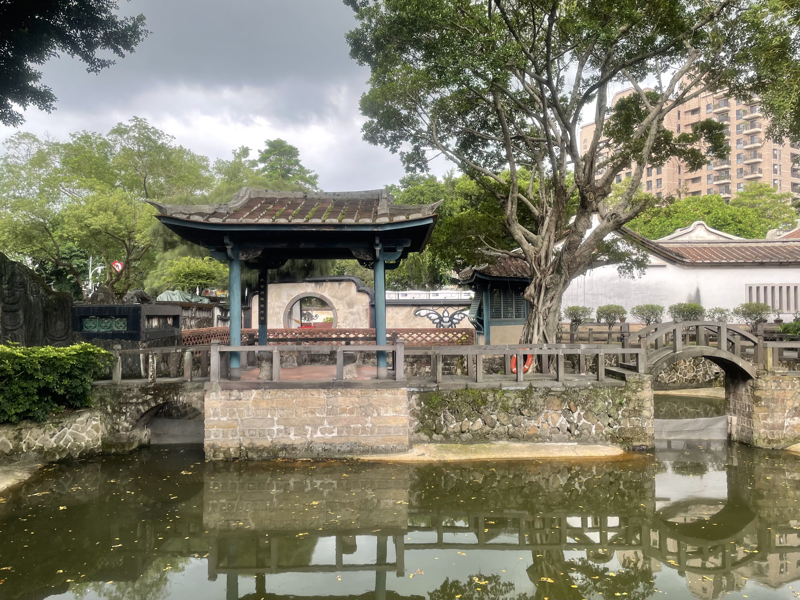
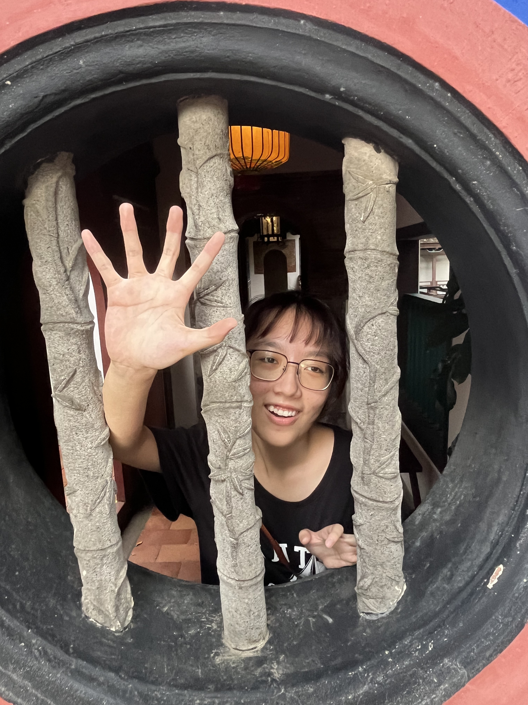
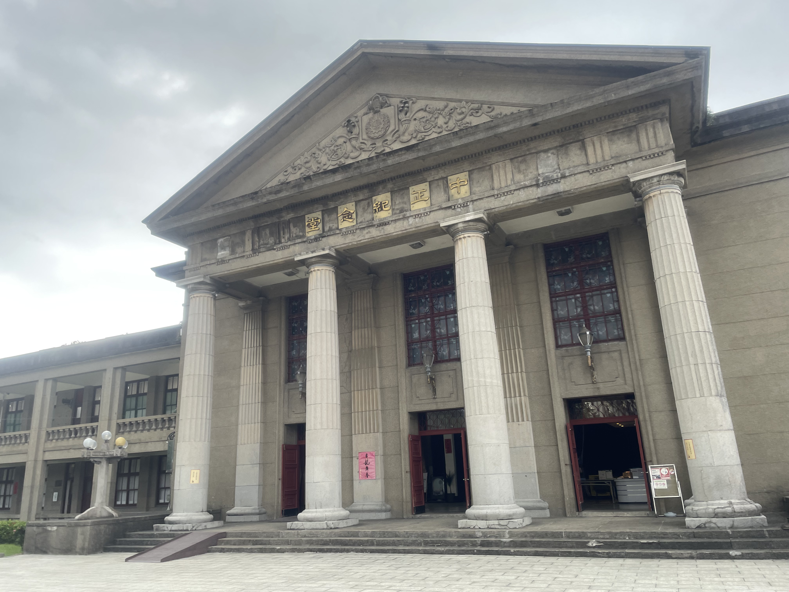
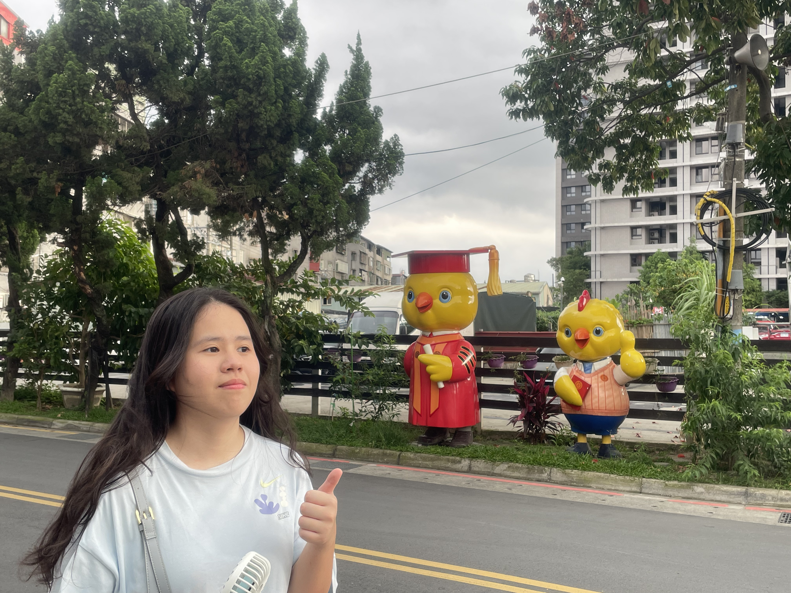
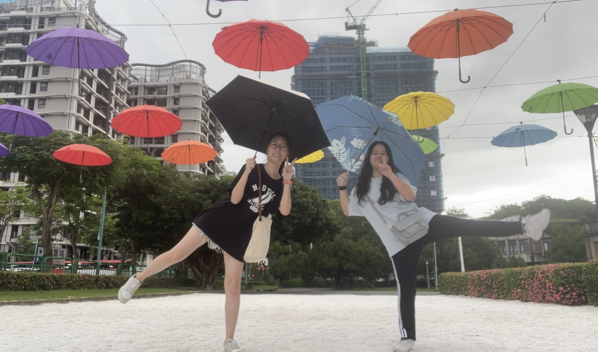
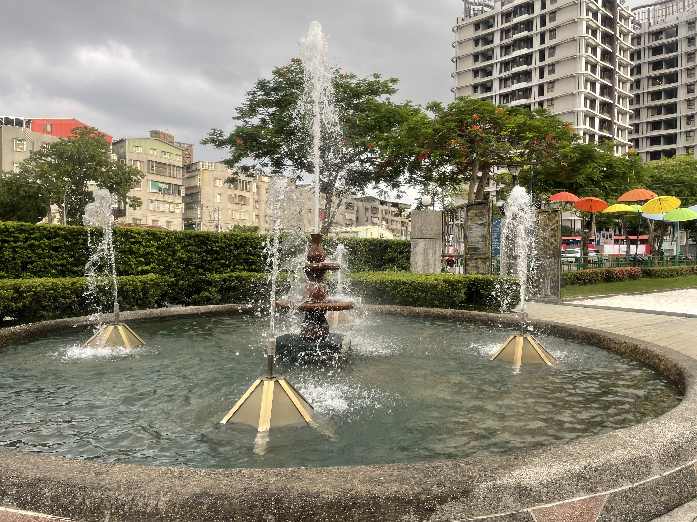

新北市板橋區
基本資訊
位於新北市西側，是新北市的行政核心與交通樞紐，也是全市人口最密集、機能最完整的行政區之一。由於市政府與多項重大公共建設設於此地，板橋在新北市的政治、經濟與生活機能中具有關鍵地位。 板橋的發展歷史可追溯至清代，早期以農業與河運為主，隨著鐵路與公路建設逐步形成城市雛形。戰後快速都市化，使板橋由傳統城鎮轉型為高度現代化的都會中心。區內仍可見如林家花園等歷史文化資產，與現代高樓與商業設施並存，呈現新舊交融的城市景觀。 在交通方面，板橋擁有臺鐵、高鐵、捷運與客運轉運站，是北臺灣最重要的轉乘節點之一。完善的交通網絡帶動商業發展，形成以板橋車站為核心的商圈與生活圈。
主要景點
- 板橋車站商圈結合高鐵、臺鐵、捷運與百貨商場，形成高度密集的都會生活圈，展現板橋現代化的一面
- 新月橋與河濱公園，提供休閒、散步與自行車活動空間，也成為觀賞城市景觀的熱門地點
推薦景點
| 林本源園邸
又稱林家花園，位於新北市板橋區，是臺灣現存最完整、最具代表性的傳統園林之一。園邸興建於清代，為板橋林家宅第的一部分，見證了地方仕紳家族在臺灣社會、經濟與文化發展中的重要角色。 園區整體格局融合閩南與江南園林特色，講究借景、對景與空間層次的安排。園內亭台樓閣、水池、曲橋與庭園相互串聯，透過假山、水景與植栽營造出靜謐而富層次的景觀，展現傳統園林「雖由人作，宛自天開」的美學理念。主要建築如定靜堂、來青閣與觀稼樓，不僅具備居住與宴客功能，也反映清代士紳的生活品味與社交文化。 歷經戰亂與都市發展，林本源園邸曾一度荒廢，後經修復並對外開放，成為重要的文化資產與觀光景點。今日的林家花園不僅提供民眾休憩與參訪，也透過導覽與展覽活動，讓人理解臺灣傳統建築、園林藝術與地方歷史，是認識板橋與臺灣近代發展的重要文化場域。
| 板橋435藝文特區
前身為臺灣省政府後備司令部營區，經過空間再利用後，轉型為結合藝術展演、文化活動與公共休憩的藝文場域。園區名稱中的「435」，源自所在地門牌號碼，具有地方辨識度。 特區內保留部分軍事建築的原有結構，並加以修復與活化，成為展覽空間、藝術工作室與表演場地。寬闊的戶外草地與開放空間，常作為市集、音樂演出與親子活動的舉辦地點，使藝術融入日常生活之中。 板橋435藝文特區以親民、開放為特色，讓民眾能在輕鬆的環境中接觸藝術與文化。它不僅是板橋重要的藝文據點，也象徵城市在保留既有空間記憶的同時，賦予其新的文化功能，成為新北市推動藝文發展與公共空間活化的重要成果。





